Abstract
Unpaired single-image deraining avoids the need for aligned rainy–clean pairs, but existing translation-based formulations remain highly underconstrained because the generator is typically allowed to reconstruct the entire image. This is unnecessary for rain removal, where degradation usually affects only a subset of the scene, and may lead to unwanted modifications of reliable background content. We propose DRC-Derain, a Detect-Restore-Compose framework that reformulates unpaired deraining as localized image editing. A frequency-aware detector first estimates the rain support by combining weak photometric anchors, learnable spectral evidence, and spatial contextual reasoning. The restoration network then predicts content only for the detected regions, while rain-free pixels are preserved directly from the input through mask-guided composition. To learn this formulation without paired supervision, the same predicted support is reused in a mask-guided reverse mapping, restricting rain synthesis to the supplied region and turning cycle reconstruction into an additional localization signal. Historical predicted masks are further replayed on unrelated clean images to generate controlled synthetic rain. Since the initial photometric prior is imperfect, we employ adaptive weak-mask supervision that adjusts its influence according to degradation-aware restoration quality rather than treating it as fixed pseudo-ground truth. Experiments on synthetic and real-world benchmarks demonstrate that DRC-Derain achieves competitive deraining performance while better preserving unaffected image content and improving robustness under unpaired training.
Keywords: Single-image deraining; Unpaired learning; Rain localization; Mask-guided composition; Frequency-aware detection; Cycle consistency
System Architecture
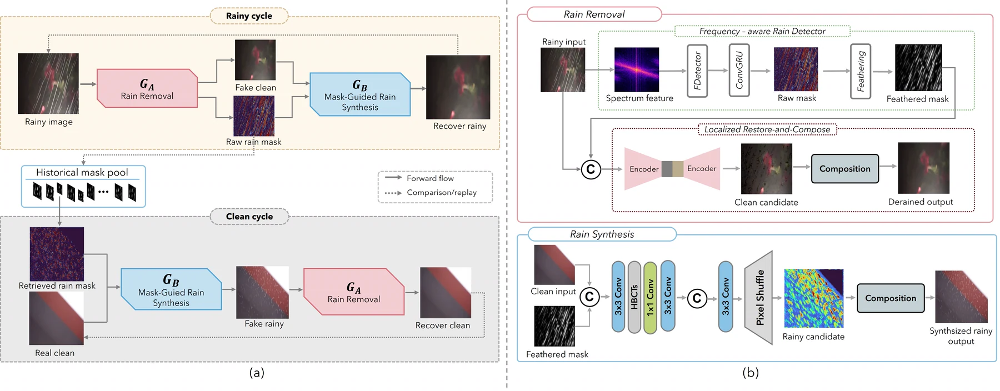
We propose the Detect-Restore-Compose Derain framework (DRC-Derain, Figure 1), consisting of a rain-removal generator GA, a mask-guided rain-synthesis generator GB, and two domain-specific discriminators. The predicted rain mask is not treated as an auxiliary attention cue; instead, it acts as the spatial variable that determines where restoration is permitted and where rain may be reintroduced by the reverse mapping.
Result Demonstration
One scene, four images. Hover anywhere overTap anywhere on any tile and all four magnify the same point at once, so you can pick a streak in the input and follow what each method did to it, side by side against the ground truth. The sample below shows the magnifier working; the results are underneath it.
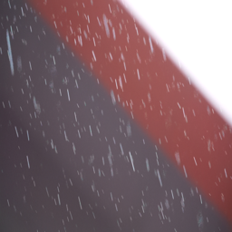


About the SOTA baseline (CSUD). CSUD, short for Channel Consistency Prior and Self-Reconstruction Strategy Based Unsupervised Image Deraining (CVPR 2025), removes rain without paired rainy/clean training data. It adds a Channel Consistency Loss built on a Channel Consistency Prior of rain streaks so the pseudo-rainy images it generates for training stay realistic while preserving background detail, and a Self-Reconstruction strategy that curbs redundant information transfer in the generator. It reports state-of-the-art results among unsupervised deraining methods with strong generalization, making it the baseline our method is compared against above.
Our Results
The slider below runs on its own to show what the control does. The six scenes under it behave identically, but are yours to drive: drag a handle, click anywhere on an image, or use the arrow keys. Fully left = our derained output; fully right = the rainy input. Hover any of them for a 2× magnifier over the residual streaks.
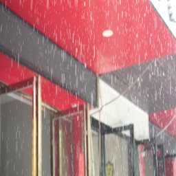

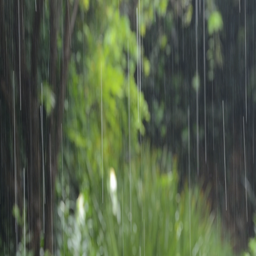
Ours Input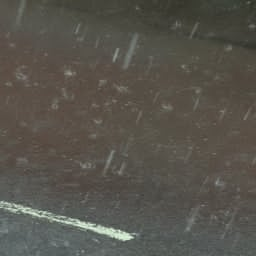
Ours Input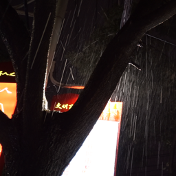
Ours Input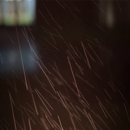

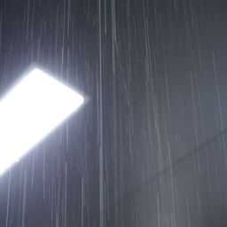
Ours Input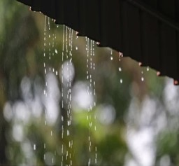
Ours Input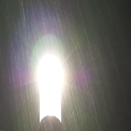
Ours Input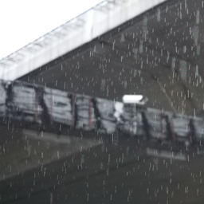
Ours Input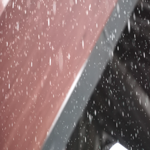
Ours Input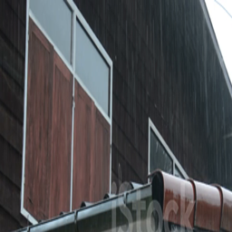
Ours InputComparison
Qualitative comparison on representative real-world rain scenes from the RealRain-1k-L test set. Each column is the same input processed by one method. Click any image to enlarge it, then use the arrow keys (or swipe) to flip between methods on the same scene.
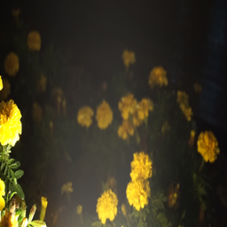
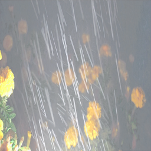
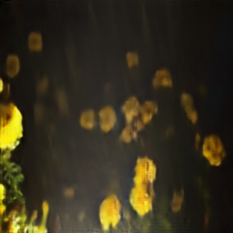
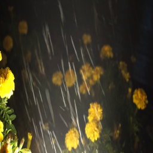
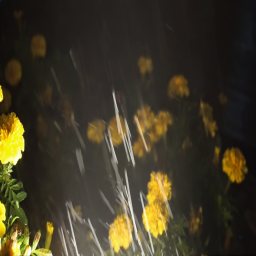
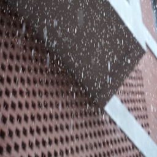
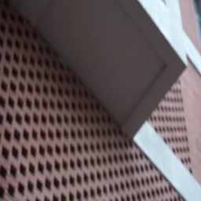
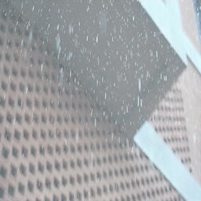
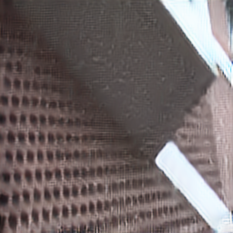
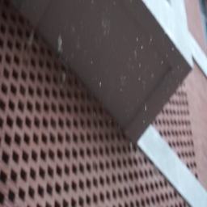
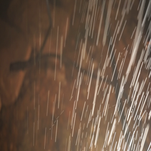
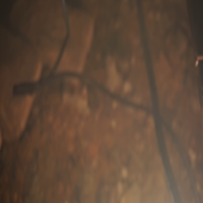
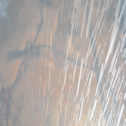
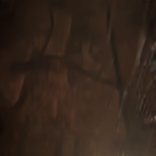
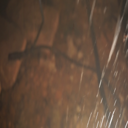
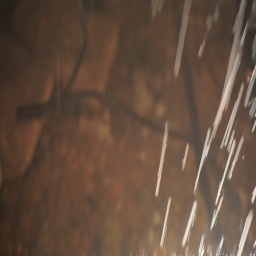
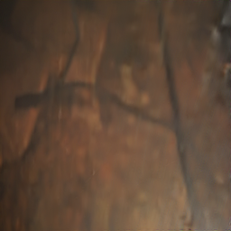

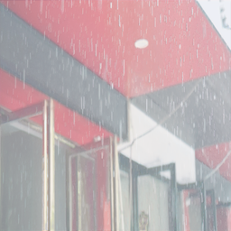
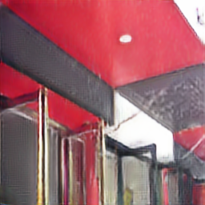
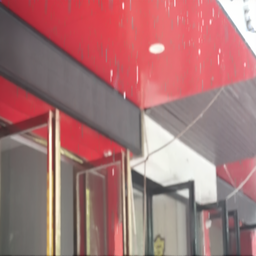
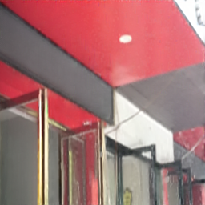


Live Demo
Video
Code
The source code of DRC-Derain is available on GitHub.
BibTeX
Update with journal, volume, pages and DOI after publication.
@misc{duong2026drcderain,
title = {DRC-Derain: Detect-Restore-Compose Framework for Unpaired Single-Image Deraining},
author = {Duong, Thi-Quynh-Nhu and Nguyen, Hoang-Thao-Trinh and Le, Thi-Ngoc-Hanh},
year = {2026},
note = {Manuscript under review}
}